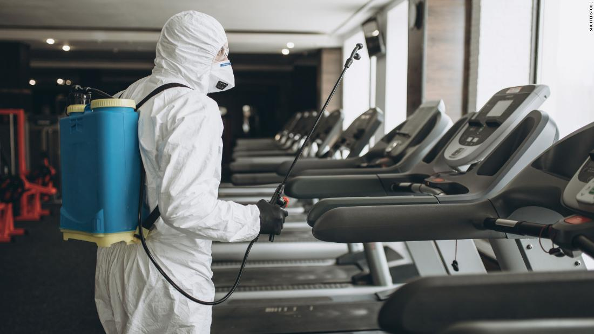
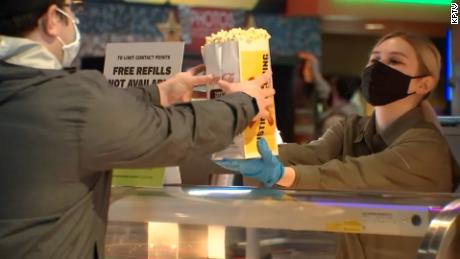
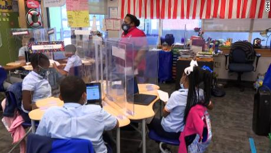
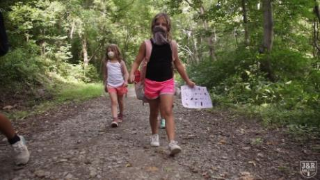
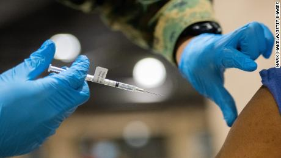
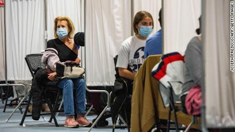
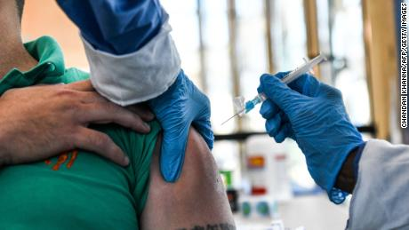
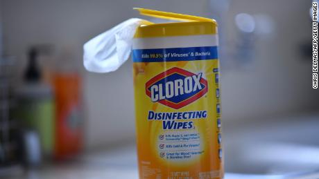
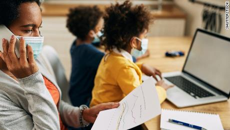

Disinfecting surfaces to prevent Covid often all for show, CDC advises

(CNN)The risk of surface transmission of Covid-19 is low, the US Centers for Disease Control and Prevention said Monday.Far more important is airborne transmission -- and people who obsessively disinfect surfaces may be doing more harm than good..
'CDC determined that the risk of surface transmission is low, and secondary to the primary routes of virus transmission through direct contact droplets and aerosols,' Vincent Hill, Chief of the Waterborne Disease Prevention Branch, said on a CDC-sponsored telephone briefing.
Hill said the risk of transmission from touching a surface, while small, is elevated indoors.Outdoors, the sun and other factors can destroy viruses, Hill said.
The virus dies 'rapidly' on porous surfaces but can persist longer on hard, indoor surfaces.

Research also suggested that surface transmission was more likely in the first 24 hours after a person is infected, and that households where one person had Covid-19 did have lower transmission rates when the household cleaned and disinfected surfaces.
So while keeping surfaces clean is not a waste of time, it's not the only way or even the most important way to reduce risks, the CDC said.It's updated its guidance for cleaning and disinfecting surfaces in community settings in light of this transmission risk.
'In most situations, cleaning surfaces using soap or detergent, and not disinfecting, is enough to reduce the already low risk of virus transmission through surfaces,' Hill said.'Disinfecting surfaces is typically not necessary, unless a sick person or someone positive for Covid-19 has been in the home within the last 24 hours.'
Hill said cleaning should be focused on high-contact areas such as doorknobs and light switches.
People may be using household cleaning products in order to protect themselves from Covid-19, but misuse can have dangerous consequences, Hill added.
Frequent cleaning and disinfecting of surfaces may have minimal impact on viral transmission and contribute to 'hygiene theater,' he added.
'Putting on a show' to clean and disinfect 'may be used to give people a sense of security that they are being protected from the virus, but this may be a false sense of security, if other prevention measures like wearing masks, physical distancing, and hand hygiene are not being consistently performed,' Hill said.
'It also could make people feel less need to engage in these other important prevention measures.'
Additional data shows that the disinfectants themselves may pose a risk.
'Public inquiries indicate that some people may purposely drink, inhale, or spray their skin with disinfectants, without understanding that use of disinfectants in this way can cause serious harm to their bodies,' he said.
Hill cited CDC research from June of 2020 showing that, of those people surveyed, 'only 58% knew that bleach should not be mixed with ammonia, because mixing bleach and ammonia creates a toxic gas that harms people's lungs.'
'Nineteen percent wash food products with bleach, which could lead to their consumption of bleach that isn't washed off, which can damage the body because bleach is toxic.Eighteen percent used household cleaner on bare skin, which can damage the skin and cause rashes and burns,' Hill said.
Hill added that surveillance data show the volume of calls to poison centers in 2020 for disinfectants was higher than in either 2018 or 2019.
Alternative disinfection methods can also be a waste of time or even risky, the CDC says in the updated guidance.
'The effectiveness of alternative surface disinfection methods, such as ultrasonic waves, high intensity UV radiation, and LED blue light against the virus that causes COVID-19 has not been fully established,' the CDC says on its updated website.
Posted On: 2021-04-20T00:00:00
Posted By: Virginia Langmaid







Content Date: 2021-04-20
Download Date: 2021-05-13
Document ID: L0C04C0R5